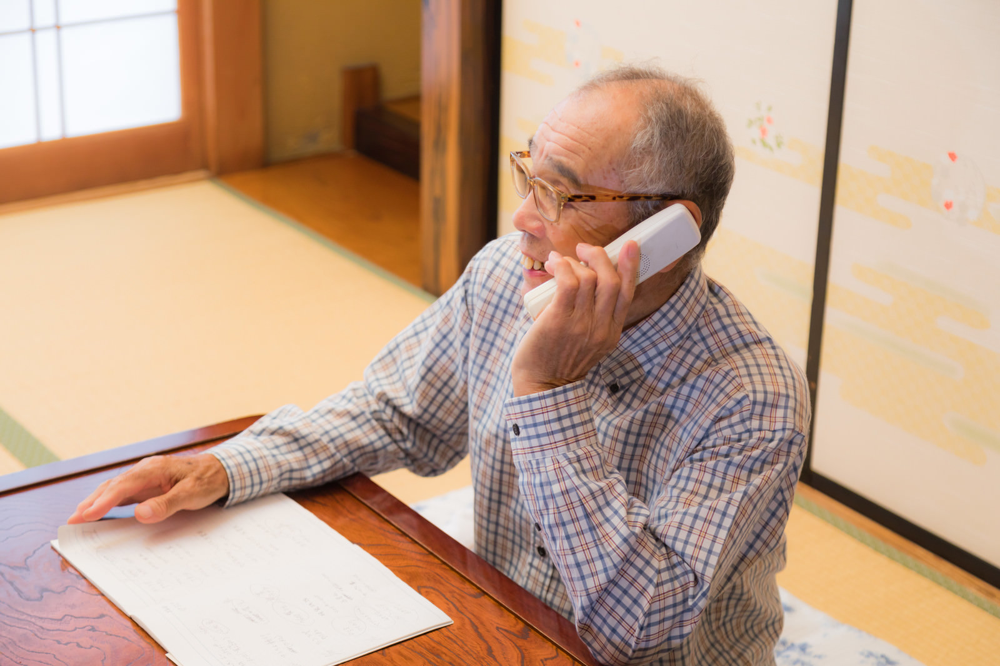
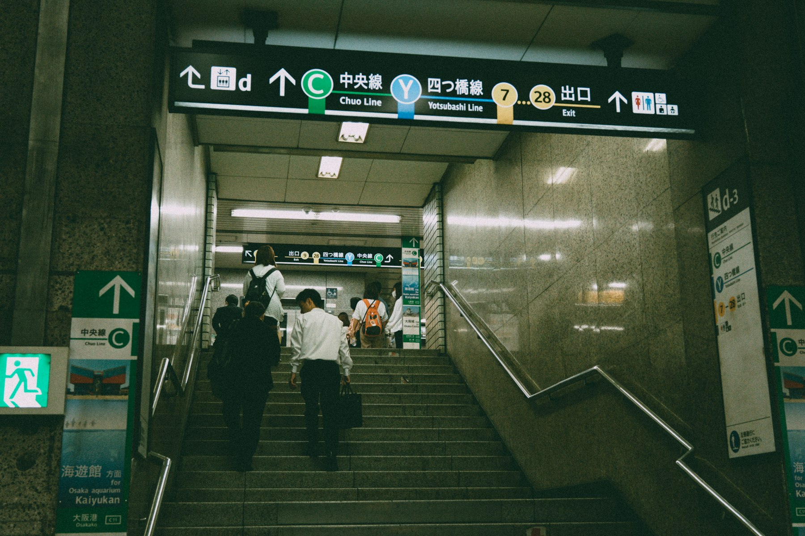
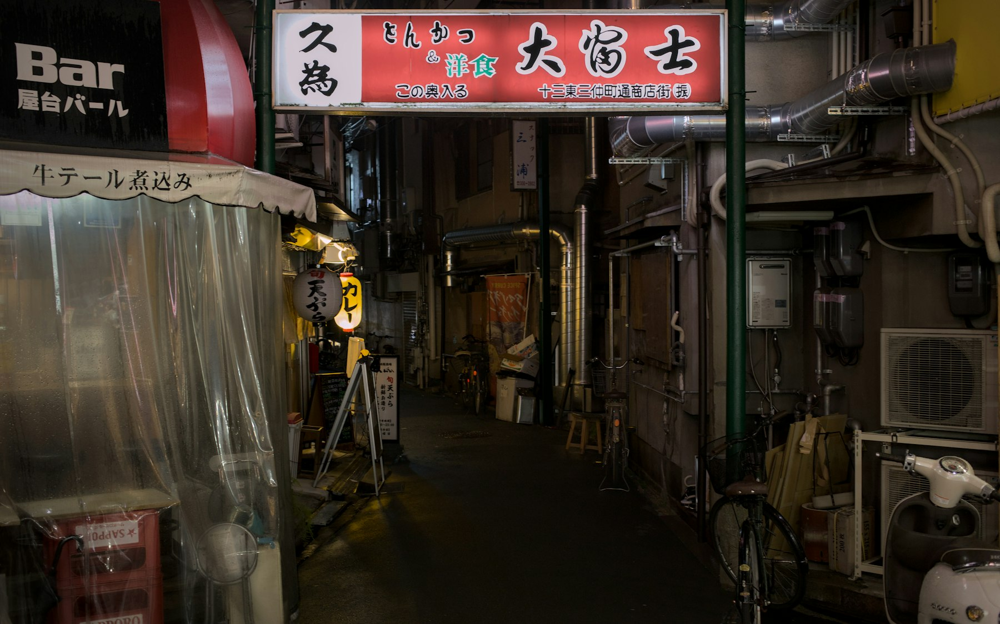
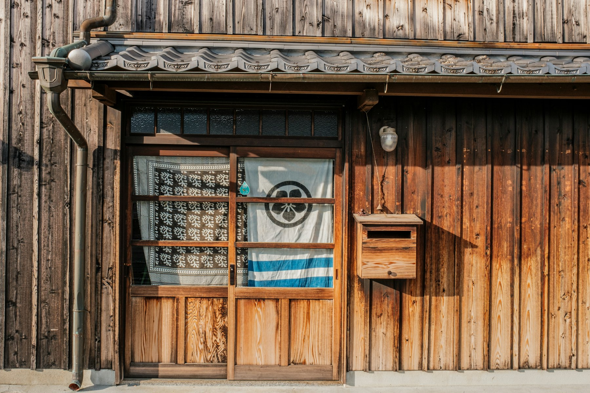

FAQ

FAQ & Access
よくいただくご質問と、ご予約方法・教室へのアクセスをまとめました。
解決しないことは、お気軽にお電話ください。
TOP ／ よくある質問・アクセス
大丈夫です。先生がとなりで手元を見ながら、 筆の持ち方からお教えします。はじめての方がほとんどです。
もちろん大丈夫です。ひとりで参加される方も多くいらっしゃいます。
はい、お持ちいただいても大丈夫です。
はい。お子さまも参加していただけます。
器は教室でお預かりするので、ご自分のペースで通えます。 前日までのご連絡で、ほかの日時に振り替えもできます。
器はいくつでも直すことができます。
全10回で終わらなかった場合も、最後まで受講していただけます。
はい。修了後も継続して通っていただけます。
はい。未受講分の受講料をお返しします（入会金・受講済みの回を除く）。 お預かり中の器は、その時点の状態でお返しします。
お預かり中の器は、教室が責任をもって管理します。 万一破損した場合は、追加料金なしで修理を続けます。
漆は肌につくとかぶれることがあります。手袋とアームカバーをお貸ししますので、 長袖でお越しください。肌が弱い方は事前にご相談ください。
はい。修理後は食器としてお使いいただけます。
電子レンジや食洗機はご使用いただけません。
体調や状況によって異なりますので、事前にご相談ください。
無理に続けず、まずはお休みしてください。症状が落ち着くまで振り替えができます。 続けるのが難しい場合は、未受講分の受講料をお返しします。
器の状態をうかがってから合うコースをご案内したいので、 ご予約はお電話のみで承っています。
はい。キャンセルの場合は、事前にご連絡ください。
現金またはクレジットカードでお支払いいただけます。
毎週月曜日に、翌週の空き状況をInstagram（@keshiki_kintsugi）でお知らせしています。 受付時間外は留守番電話にご用件を残していただければ、折り返しご連絡します。
ガラスは材料を交えて対応できる場合があります。器の状態を見てご相談ください。
はい。修理のみのご依頼も承っています。
はい。教室専用の駐車場をご用意しています。
はい、修理のみのご依頼も承っています。 器の状態を拝見して、無料でお見積もりをお出しします。 本漆で直すため、お渡しまで約2〜3か月かかります。
Reservationご予約方法
器の状態や、やってみたいことをうかがってから、あなたに合うコースをご案内したいので、ご予約はお電話のみで承っています。
STEP 01
希望のコース・日時・人数をお伝えください。
STEP 02
空きを確認して、その場でご予約が確定します。
STEP 03
開始の10分前までにお越しください。
Accessアクセス
Route駅からの道順

STEP 01
中崎町駅の2番出口を出たら、左へまっすぐ進みます。

STEP 02
1つ目の角（カフェの手前）を右に曲がり、細い路地を進みます。

STEP 03
右手にある古民家の、木の格子戸が目印です。階段で2階へどうぞ。